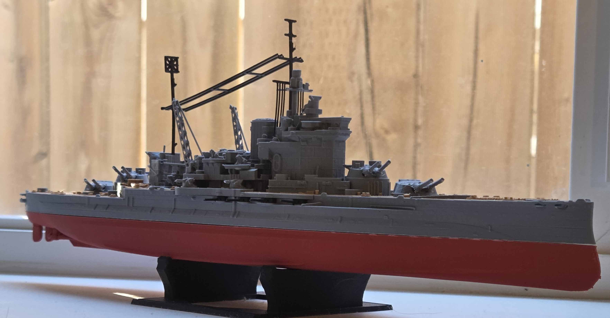
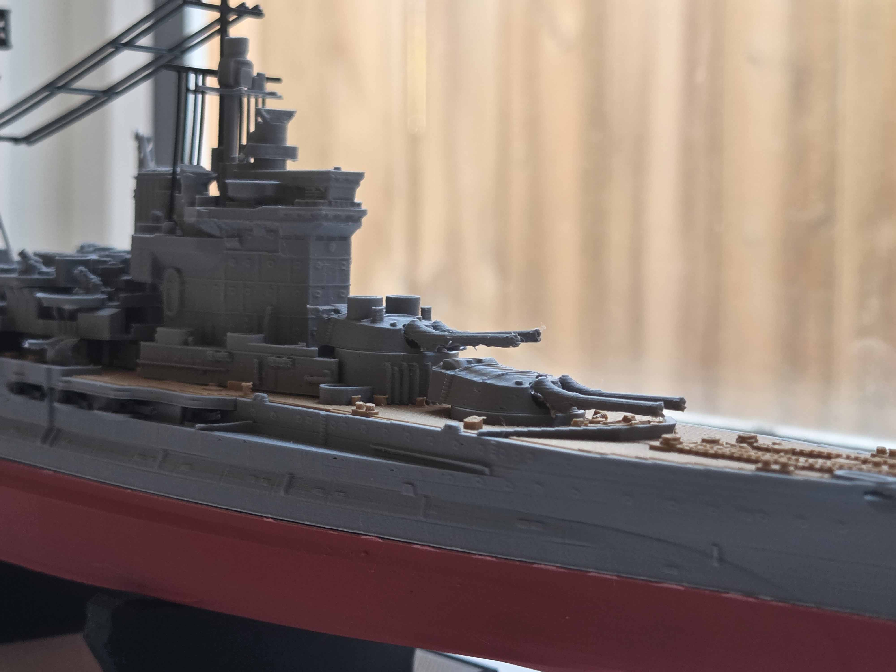
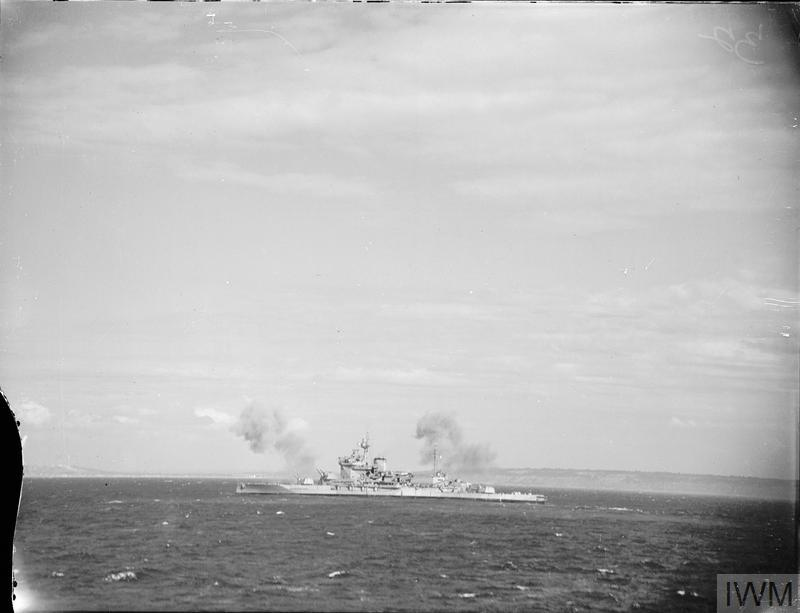
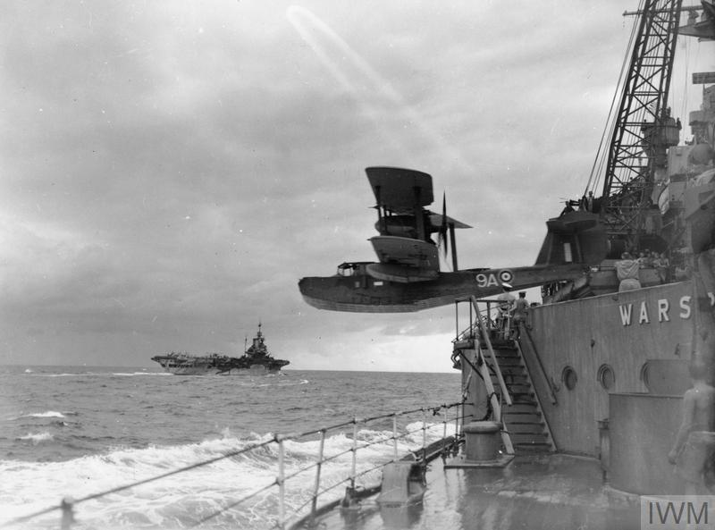
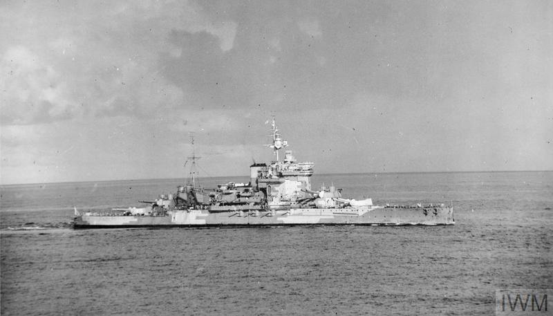

Feb 7, 2026:
Recently a member of the World of Warships community took it upon himself to modify the in game 3D model of HMS Warspite to make it suitable for 3D printing. Having recently gained access to the 3D printers at my University I decided that I wanted my own miniature of the best ship ever.
The first step was grabbing the STLs from the makerworld page, then importing them into Prusa Slicer. The prints assume a square print bed, but the Prusa mk4s printers I have access to have a slightly rectangular one, requiring a bit of fenagling to get the larger parts to fit. I also had a few failed prints due to bed adhesion issues. Adding a small brim fixed this. I printed in 6 batches, one for the red lower hull, one for the grey upper hull, one for the rest of the grey parts (mostly super structure and main guns), one for the brown decks, one for the black masts/rigging and stand, and finally a yellow print for the propellers.
I am happy with the result, though I am sad that the bottom part of the ram bow broke off. I can't bring myself to throw out the otherwise good lower hull so I may try gluing or melting the part back on.
  "HMS WARSPITE, part of Bombarding Force 'D' off Le Havre, shelling German gun batteries in support of the landings on Sword area, 6 June 1944. The photo was taken from the frigate HMS HOLMES which formed part of the escort group." IWM (A 23914)
"The Supermarine Walrus amphibious aircraft from HMS WARSPITE is catapulted from the ship at the start of an anti-submarine patrol off the Seychelles. An aircraft carrier can be seen sailing in the background." IWM (A 11027)
 "HMS WARSPITE at sea during Madagascar operations." Image: IWM (A 9701)